| Übung | Boden | Reck | Barren |
|---|---|---|---|
| Ü22 Punkte+ bis zu 3 Zusatzpunktemax. 5 | 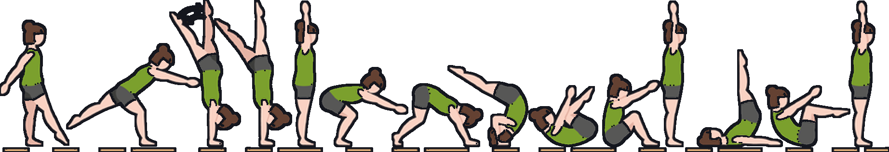
| 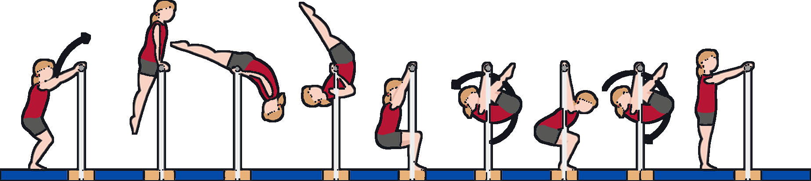
| 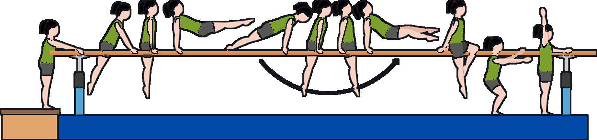
|
| Ü33 Punkte+ bis zu 3 Zusatzpunktemax. 6 | 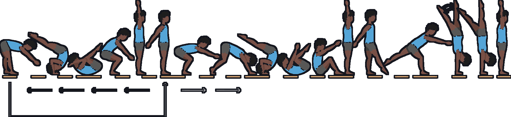
| 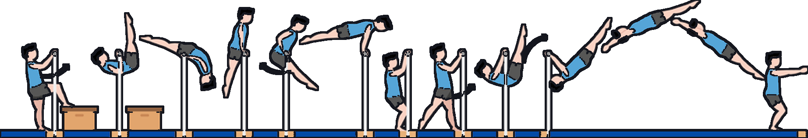
| 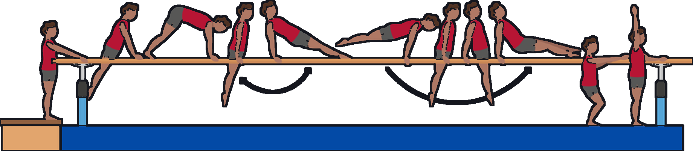
|
| Ü44 Punkte+ bis zu 3 Zusatzpunktemax. 7 | 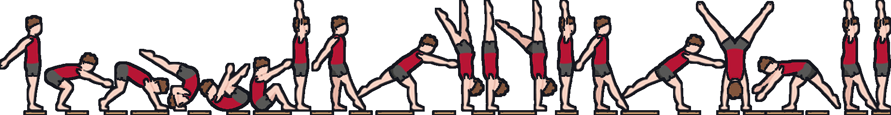
| 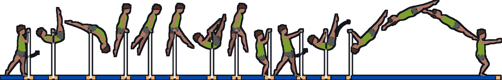
| 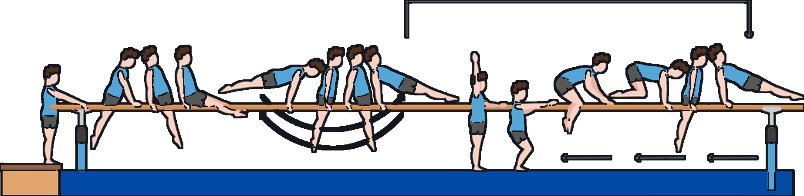
|
| Ü55 Punkte+ bis zu 3 Zusatzpunktemax. 8 | 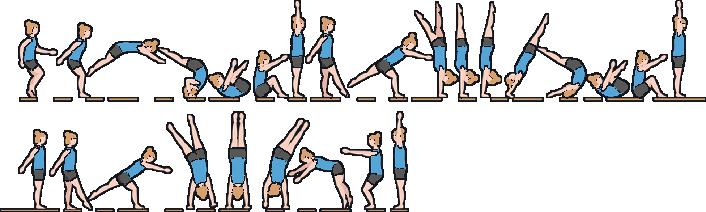
| 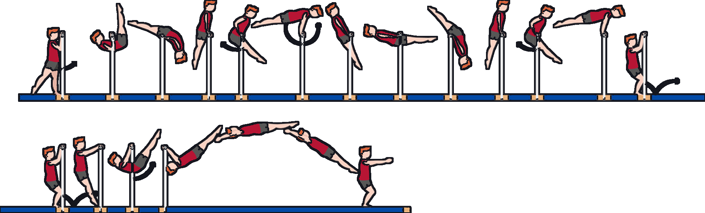
| 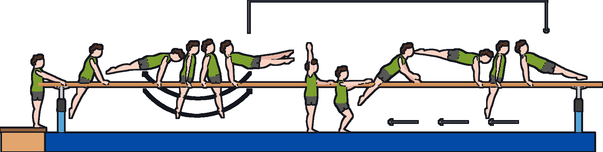
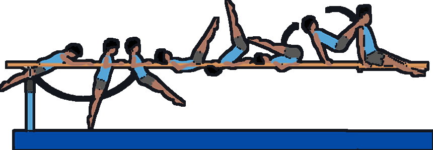 Kippe in den Grätschsitz (Oberarmkippe) |
| Ü66 Punkte+ bis zu 3 Zusatzpunktemax. 9 | 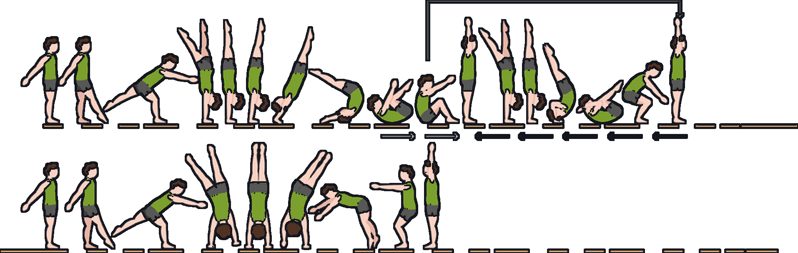
| 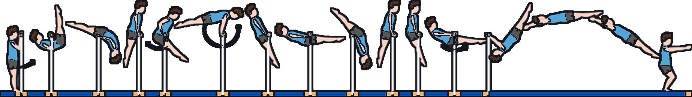
| 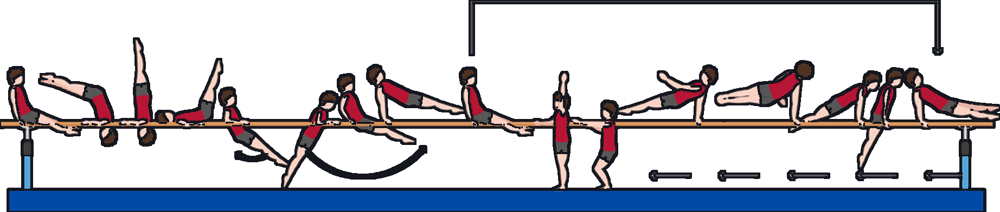
|
| Übung | Balancieren | Sprung | Noten | ||||||||||||||||||||||||||||||||||||||||||||||||||||||||||||||||||||||||||||||||||||||||||||||||||||||||||||||||||||||||||||||||||||||||||||||||||||||||||||||||||||||||||||||||||||||||||||||
|---|---|---|---|---|---|---|---|---|---|---|---|---|---|---|---|---|---|---|---|---|---|---|---|---|---|---|---|---|---|---|---|---|---|---|---|---|---|---|---|---|---|---|---|---|---|---|---|---|---|---|---|---|---|---|---|---|---|---|---|---|---|---|---|---|---|---|---|---|---|---|---|---|---|---|---|---|---|---|---|---|---|---|---|---|---|---|---|---|---|---|---|---|---|---|---|---|---|---|---|---|---|---|---|---|---|---|---|---|---|---|---|---|---|---|---|---|---|---|---|---|---|---|---|---|---|---|---|---|---|---|---|---|---|---|---|---|---|---|---|---|---|---|---|---|---|---|---|---|---|---|---|---|---|---|---|---|---|---|---|---|---|---|---|---|---|---|---|---|---|---|---|---|---|---|---|---|---|---|---|---|---|---|---|---|---|---|---|---|---|---|---|---|---|
| Ü22 Punkte+ bis zu 3 Zusatzpunktemax. 5 | Bank schmal 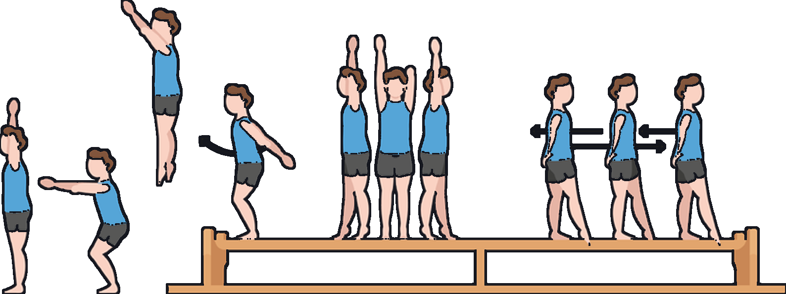
| Kasten längs (Bauchhöhe) 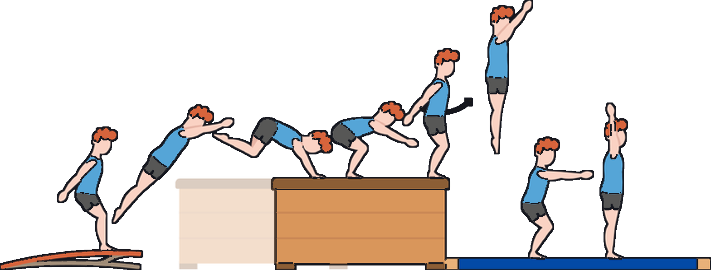
|
So läuft der Dreikampf
Punkte und Note (Jungen)Summe der 3 gewählten Geräte. Note 1,0 ab: Kl. 7: ab 20 · Kl. 8: ab 21 · Kl. 9: ab 22 · Kl. 10: ab 23.
Unter 5 Punkten: siehe Notenliste. | ||||||||||||||||||||||||||||||||||||||||||||||||||||||||||||||||||||||||||||||||||||||||||||||||||||||||||||||||||||||||||||||||||||||||||||||||||||||||||||||||||||||||||||||||||||||||||||||
| Ü33 Punkte+ bis zu 3 Zusatzpunktemax. 6 | Balken oder höhere, schmale Bank 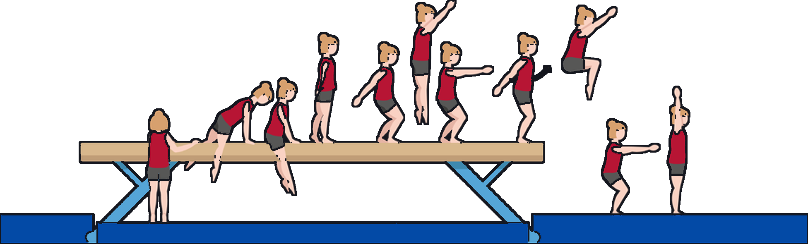
| Bock, ca. 0,90 m 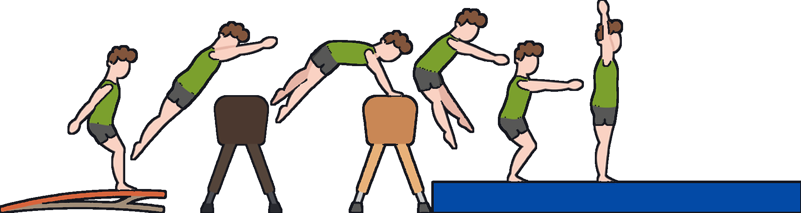
| |||||||||||||||||||||||||||||||||||||||||||||||||||||||||||||||||||||||||||||||||||||||||||||||||||||||||||||||||||||||||||||||||||||||||||||||||||||||||||||||||||||||||||||||||||||||||||||||
| Ü44 Punkte+ bis zu 3 Zusatzpunktemax. 7 | Balken oder höhere, schmale Bank 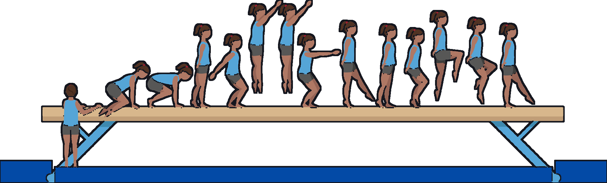
| Bock, Pferd oder Kasten, mind. 1 m 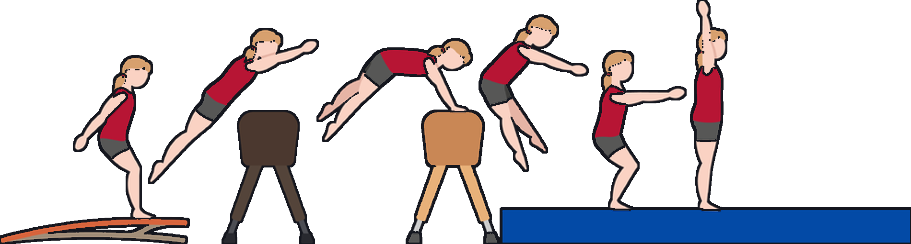
| |||||||||||||||||||||||||||||||||||||||||||||||||||||||||||||||||||||||||||||||||||||||||||||||||||||||||||||||||||||||||||||||||||||||||||||||||||||||||||||||||||||||||||||||||||||||||||||||
| Ü55 Punkte+ bis zu 3 Zusatzpunktemax. 8 | 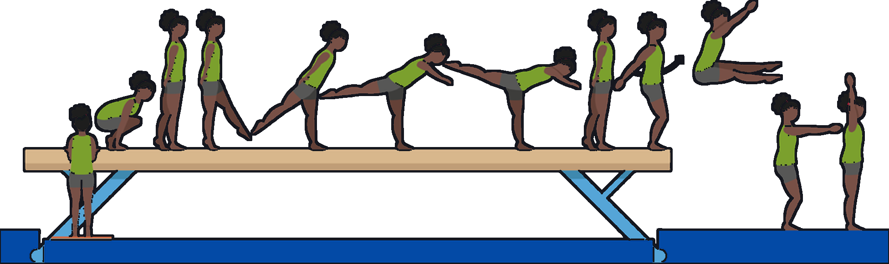
| T-Bock, Sprungtisch, Pferd oder Kasten (1,10 m) 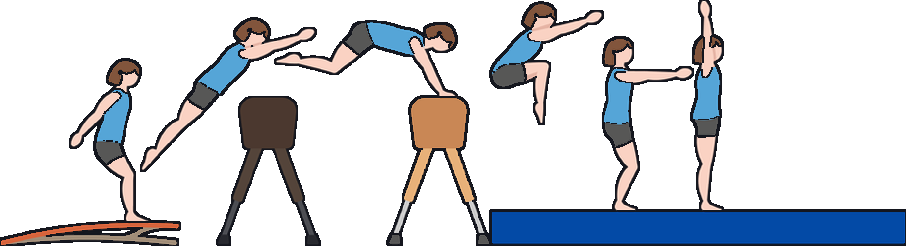
| |||||||||||||||||||||||||||||||||||||||||||||||||||||||||||||||||||||||||||||||||||||||||||||||||||||||||||||||||||||||||||||||||||||||||||||||||||||||||||||||||||||||||||||||||||||||||||||||
| Ü66 Punkte+ bis zu 3 Zusatzpunktemax. 9 | 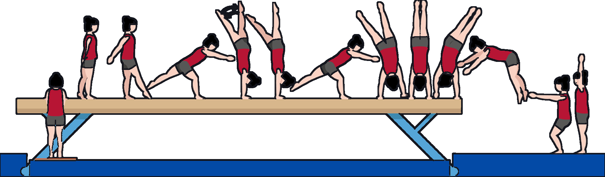
| T-Bock, Sprungtisch, Pferd oder Kasten (1,20 m) 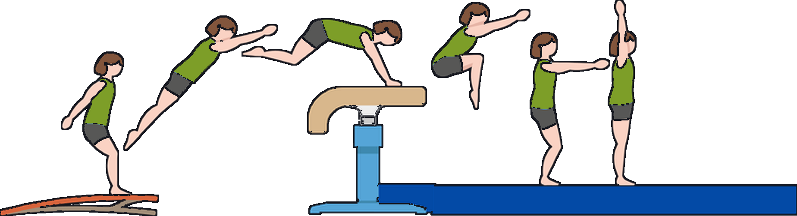
|
Alternativvorschlag zum festen Übungsblock: Statt der drei Elemente einer Stufe wählt jede Schülerin und jeder Schüler pro Disziplin selbst drei Elemente aus beliebigen Stufen. Die Bildreihen sind dieselben wie auf den Karten.